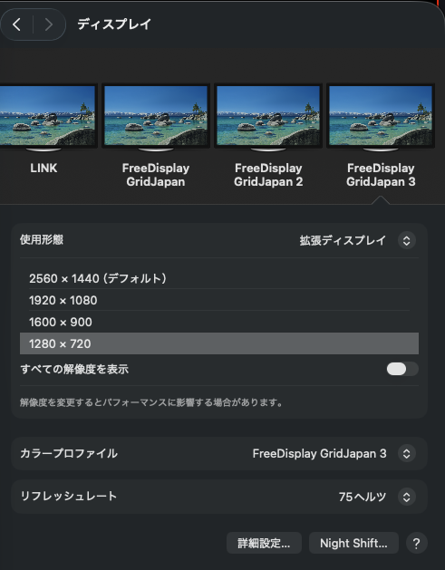
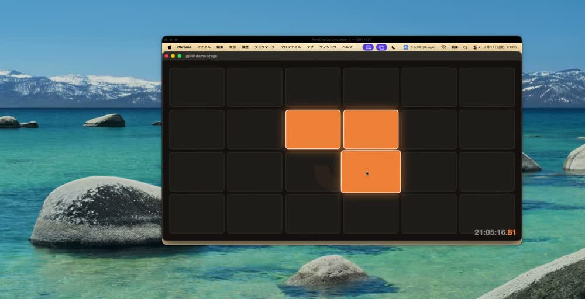

GridJapan fork ／ macOS 菜单栏 app
给 macOS 加一块
不存在的显示器。
一款免费的 macOS 菜单栏 app，无需物理显示器即可创建 HiDPI 虚拟显示器。也可以通过 DDC 控制真实显示器的亮度和对比度。
macOS 14+
Swift 6 ・ SwiftUI
免费、源码公开

3 块物理显示器＋3 块虚拟显示器。macOS 全都当作真实显示器
一款免费的 macOS 菜单栏 app，无需物理显示器即可创建 HiDPI 虚拟显示器。也可以通过 DDC 控制真实显示器的亮度和对比度。
FreeDisplay（GridJapan fork）完整支持 gjPiPWindow。为了长期同时使用 3 块虚拟显示器，我们修复了官方版的 4 个 bug，并加入 4 类功能：记住解像度、预设、单独识别每块显示器、单独关闭每块显示器。
FreeDisplay 创建的虚拟显示器，在 macOS 看来就是真实显示器。它们会和物理显示器一起出现在系统设置中，也可以选择解像度和刷新率（75Hz）。

无需物理显示器即可创建显示器，并可同时使用多块。
通过 IOKit I2C 直接控制外部显示器的硬件设置。
让键盘亮度键也能控制外部显示器，并显示 HUD。
可根据时间自动调节亮度。
内置排列编辑器，也可切换主显示器。
可为每块显示器切换 ICC 配置文件。
可通过软件调整伽马、对比度、色温和反色。
可保存并恢复显示器配置。
这个 fork 是为了让 3 块虚拟显示器长期并排运行，并配合 gjPiP 使用而整理的。过程中修复了官方版的 4 个 bug，也补上了 4 个缺失功能。详情见 README。
@MainActor 闭包在 DDC 队列上执行，触发 Swift 的隔离检查失败。只要按一次亮度键就能复现。
ScrollView 没有理想高度，而窗口型 MenuBarExtra 会按理想高度决定大小，导致菜单内容全部消失。
因为这次修改本身触发了自动排列，把显示器从原点拉开了。
因为重复检查看的不是 ID，而是宽度和高度。
会记住在系统设置中选择的解像度，重启后也能保持。官方版过一段时间可能会自行恢复原状。
新增 1920×1200 和 2048×1280，创建时即可选择。
为每块显示器分别设置名称和 serial，让 macOS 能正确记住并恢复 3 块显示器的排列。
过去只能一次性全部关闭。现在可以单独关闭每一块。
虚拟显示器没有物理屏幕。查看和操作它，是搭档 app gjPiP 的工作。你可以把任意显示器实时显示为 PiP，并通过 PiP 用鼠标操作。

请从源码构建。仓库内已包含 Xcode 项目，只要安装了 Xcode 就可以直接构建。
# 克隆并构建（会生成 build/FreeDisplay.dmg） git clone https://github.com/GridJapan/FreeDisplay.git cd FreeDisplay ./build.sh # 打开 DMG，将 FreeDisplay.app 移到 Applications。 # 由于未签名，首次启动时请右键点击 →“打开”。
| 权限 | 用途 |
|---|---|
| 辅助功能 | 使用外部显示器时，用于接管键盘亮度键。 |
不会使用网络连接（可选的 GitHub Releases 更新检查除外）。